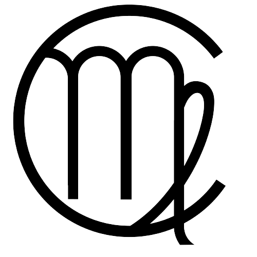
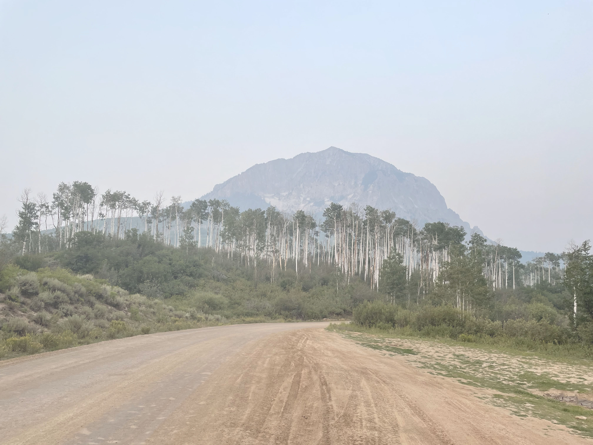
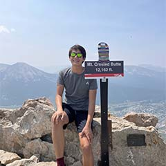

Welcome, I'm Cameron!
  

A little bit about me...I am currently a Sophomore at the University of Michigan studying Information Analytics at the School of Information with a double minor in Social Class and Inequalities Studies and Music. Originally hailing from Okemos, MI (a small suburb outside of East Lansing), I have been a Michigan fan my whole life and attended my first game in the Big House in 2010! Outside of my love for all things data, you can find me serving in my local communities, singing with my a cappella group, Amazin' Blue, or skiing with my friends and family.
I am so glad you are here. On this page you will find more information on my work experience, community engagement, and personal life. As an extreme extrovert, I love meeting new people, so feel free to reach out!
My mission: To develop deep, enriching relationships with family and friends; to serve and promote equity within my community, sparking lasting positive change as both a learner and a leader; to recognize and hold myself accountable to personal goals and happiness; to find joy in everything I do.
My values: Empathy, Equity, Community, Connection, Collaboration, Enthusiasm
What can I do, you may ask? Check it out!